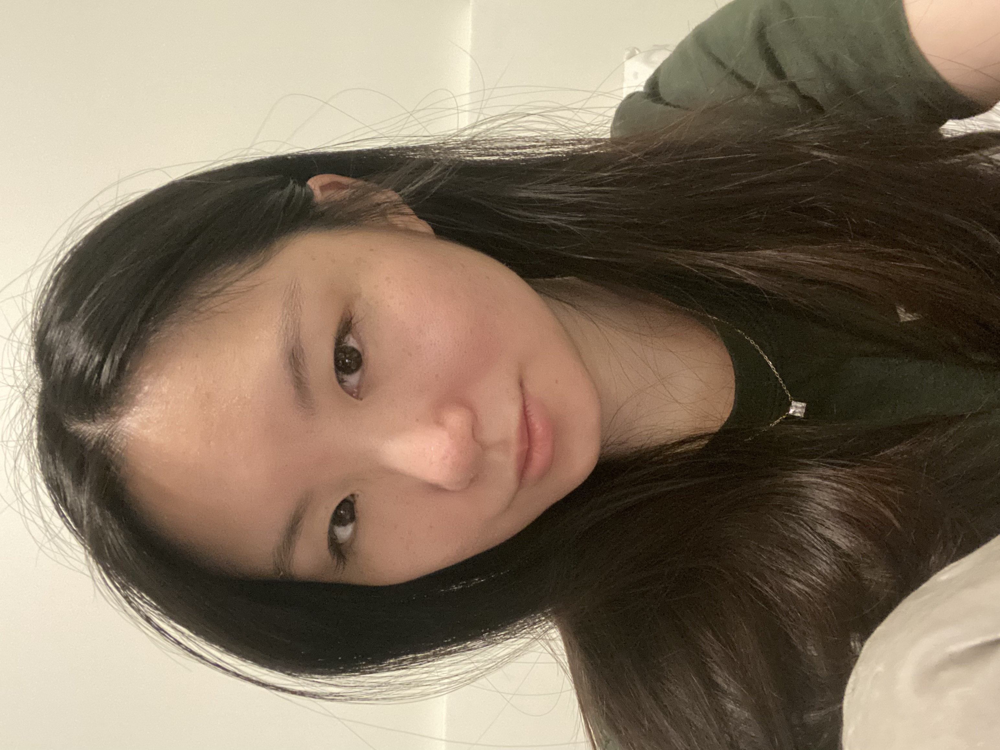
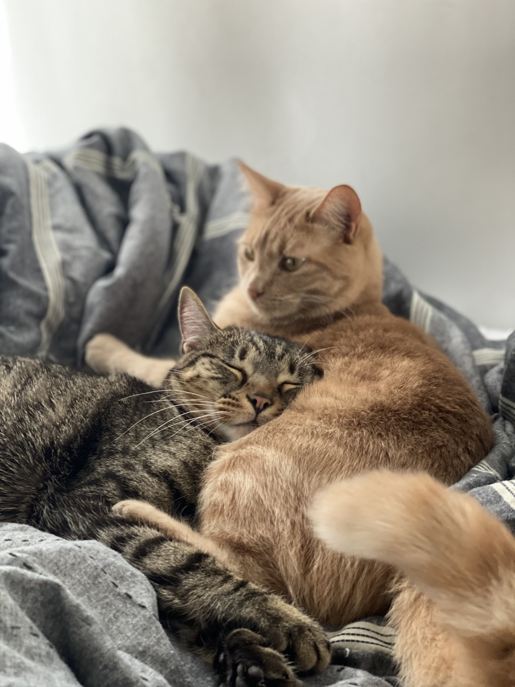

|   |
About MeHi everyone in the DSAN fam! My name is Yaxin Ye, which is pronounced as “Yasheen Yeh” in case you are wondering:) If anyone struggles with pronouncing my name, feel free to call me Carmen. I was born and raised in China, and decided to come the United States for higher education at the age of 17. I completed my undergraduate study at the University of Minnesota - Twin Cities where I majored in Management Information Systems at the Carlson School of Management. Although I also had a minor in Computer Science, I still consider myself to be more business-oriented rather than technology-oriented. I want to achieve a greater balance between business and technology in terms of my professional skills, which is one of the main reasons why I chose the DSAN program for my graduate study. With the technical skills and data-driven mindset the DSAN program will equip me with, I’m hoping to work as a data analyst or business analyst in the entertainment industries (music, movies, or gaming) or fashion industry. As for my hobbies, I’m a huge fan of EDM (Electronic Dance Music). I like watching live performances of the DJs at local rave events and music festivals. I enjoy working out at the gym or just simply taking a walk along the Potomac River. I travel whenever I have a chance because I find immersing myself in new environments/cultures very helpful for stress relief. I’m a foodie as well, I like to both cook and explore new restaurants in town. Other than these, I’m a coffee lover, and a mom of two extremely cute cats whose names are Simba and Lulu. You should be able to see a picture of them two on the left side of this page. I adopted my cats during the COVID-19 lockdown in 2020, which was probably one of the best decisions I made. With their companion, I got to get through that difficult time of the period when no friends or families could be around me due to the pandemic. If anybody needs a partner to go shopping, grab some coffee, or rave with, or if you need someone to babysit your cats, just know that I'm always down to volunteer! |
Academic & Professional InterestsDuring my time in the DSAN program, I hope I will not only gain sufficient skillsets to manipulate data like a pro but also be able to think like a real data scientist in order to derive useful business insights from the overwhelming data jungle. Essentially, I want to bridge the gap between the business decision-making process and the data-knowledge implementation since I find myself equally passionate in both fields. |
Education2017 - 2021: University of Minnesota (B.S. in Business) 2022 - : Georgetown University - Data Science and Analytics program |